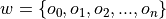

Roulette Game Class¶
Between the Player class and the Game class, we have a
chicken-and-egg design problem: it’s not clear
which we should do first. In this chapter,
we’ll describe the design for Game in detail. However, in
order to create the deliverables, we have to create a version of Player
that we can use to get started.
In the long run, we’ll need to create a sophisticated hierarchy of players.
Rather than digress too far, we’ll create a simple player, Passenger57 (they always
bet on black), which will be the basis for further design in later chapters.
The class that implements the game will be examined in Roulette Game Analysis.
Once we’ve defined the game, we can also define a simple player class to interact with the game. We’ll look at this in Passenger57 Design.
After looking at the player in detail, we can look at the game in detail. We’ll examine the class in Roulette Game Design.
We’ll provide some additional details in Roulette Game Questions and Answers. The Roulette Game Deliverables section will enumerate the deliverables.
There are a few variations on how Roulette works. We’ll look at how we can include these details in the Appendix: Roulette Variations section.
Roulette Game Analysis¶
The Game’s responsibility is to cycle through the
various steps of a defined procedure. We’ll look at the procedure
in detail. We’ll also look at how we match bets in The Bet Matching Algorithms.
This will lead us to define the player interface, which we’ll look at in
Player Interface.
This is an active class that makes use of the classes we have built so far. The hallmark of an active class is longer or more complex methods. This is distinct from most of the classes we have considered so far, which have relatively trivial methods that are little more than collections of related instance variables.
The procedure for one round of the game is the following.
A Single Round of Roulette
Place Bets. Notify the
Playerobject to createBetinstances. The real work of placing bets is delegated to thePlayerclass. Note that the money is committed at this point; the player’s stake should be reduced as part of creating aBetobject.Spin Wheel. Get the next spin of the
Wheelinstance, giving the winningBinobject, w. This is a collection of individualOutcomeinstances. AnyBetinstance with a winning outcome is a winner. We can say : the winning bin is a set of outcomes.Resolve All Bets.
For each
Bet, b, placed by thePlayer:Winner? If the
Outcomeobject ofBet, b, is in the winningBin, w, then notify thePlayerobject thatBetb was a winner and update thePlayerobject’s stake.Loser? If the
Outcomeobject ofBet, b, is not in the winningBin, w, then notify thePlayerthatBetb was a loser. This allows thePlayerto update the betting amount for the next round.
The Bet Matching Algorithms¶
This Game class will have the responsibility for matching the
collection of Outcome instances in the Bin object of the Wheel object
with the Outcome attributes of the collection of Bet instances
on the Table object.
We’ll need to structure a loop to compare individual elements from these two collections.
There are two common ways to iterate through the bets and outcomes:
Driven by
Binobject contents. We can visit eachOutcomeinstance in the winningBinobject.Driven by
Tableobject contents. We can to visit eachBetinstance contained by theTableobject.
We’ll look at each algorithm to select the best choice.
To examine each Outcome object in the winning Bin object,
we’ll use code like the following.
 :
:After this examination, all Bet instances which have not been paid off are losers.
This is unpleasantly complex because we can’t resolve a Bet instance until we’ve
checked all Outcome instances in the winning Bin object.
To examine each Outcome object in the Bet instances within the Table object,
we’ll use code like the following.
This is simpler because the winning Bin instance is a frozenset of Outcome instances,
we can exploit set membership methods to test for presence or absence
of the Outcome instance for a Bet object in the winning Bin instance.
Player Interface¶
The Game class and Player class collaboration involves mutual dependencies.
This creates a “chicken and egg” problem in decomposing the
relationship between these classes. The Player class depends on
Game class features. The Game class depends on Player class
features.
Which do we design first?
We note that the Player class
is really a complete hierarchy of subclasses, each of which provides a
different betting strategy. For the purposes of making the Game class
work, we can develop our unit tests with a stub for the Player class
that simply places a single kind of bet. We’ll call this player
“Passenger57” because it always bets on Black.
Once we have a simplistic player, we can define the Game class more
completely.
After we have the Game class finished, we can then revisit this design
to make more sophisticated subclasses of Player class. In effect,
we’ll bounce back and forth between Player class and Game class, adding
features to each as needed.
For some additional design considerations, see Appendix: Roulette Variations. This provides some more advanced game options that our current design can be made to support. We’ll leave this as an exercise for the more advanced student.
Passenger57 Design¶
-
class
Passenger57¶ Passenger57constructs aBetinstance based on theOutcomeobject named"Black". This is a very persistent player.We’ll need a source for the Black outcome. We have several choices; we looked at these in Roulette Bet Class. We will query the
Wheelobject for the neededOutcomeobject.
In the long run, we’ll have to define a Player superclass,
and make Passenger57 class a proper subclass of Player class.
Since our focus is on getting the Game class designed and built,
we’ll set this consideration aside until later.
Fields¶
Constructors¶
-
Passenger57.__init__(self, table: Table, wheel: Wheel) → None¶ - Parameters
Constructs the
Playerinstance with a specific table for placing bets. This also creates the “black”Outcome. This is saved in a variable namedPassenger57.blackfor use in creating bets.
Methods¶
-
Passenger57.placeBets(self) → None¶ Updates the
Tableobject with the various bets. This version creates aBetinstance from the “Black”Outcomeinstance. It usesTable.placeBet()to place that bet.
-
Passenger57.win(self, bet: Bet) → None¶ - Parameters
bet (
Bet) – The bet which won.
Notification from the
Gameobject that theBetinstance was a winner. The amount of money won is available via a theBet.winAmount()method.
Roulette Game Design¶
-
class
Game¶ Gamemanages the sequence of actions that defines the game of Roulette. This includes notifying thePlayerobject to place bets, spinning theWheelobject and resolving theBetinstances actually present on theTableobject.
Fields¶
Constructors¶
We based the Roulette Game constructor on a design that allows any of the fields to be replaced. This is the Strategy design pattern. Each of these collaborating objects is a replaceable strategy, and can be changed by the client that uses this game.
Additionally, we specifically do not include the Player
instance in the constructor. The Game exists
independently of any particular Player, and we defer
binding the Player and Game until we are
gathering statistical samples.
-
Game.__init__(self, wheel: Wheel, table: Table) → None¶
Methods¶
-
Game.cycle(self, player: Player) → None - Parameters
player (
Player) – the individual player that places bets, receives winnings and pays losses.
This will execute a single cycle of play with a given
Player. It will execute the following steps:Call
Player.placeBets()method to create bets.Call
Wheel.choose()method to get the next winningBinobject.Call
iter()on thetableto get all of theBetinstances. For eachBetinstance, if the winningBincontains theOutcome, callPlayer.win()method, otherwise, call thePlayer.lose()method.
Roulette Game Simplification¶
The essence of the Game class includes a large number
of complex methods, but relatively few fields and a very simple constructor.
It may make sense to consider using a @dataclass definition for this
class. It’s not completely clear that all of the various dataclass features
are particularly useful here. The principle benefit seems to be eliminating
the need to write the tiny Game.__init__() method.
Roulette Game Questions and Answers¶
Why are a Table object and Wheel object part of the
constructor for Game class,
while a Player object is given as a parameter for the cycle()
method? Why not provide all of the objects as part of the constructor?
We are making a subtle distinction between the casino table game (a Roulette table, wheel, plus casino staff to support it) and having a player step up to the table and play the game. The game exists without any particular player. By setting up our classes to parallel the physical entities, we give ourselves the flexibility to have multiple players without a significant rewrite. We allow ourselves to support multiple concurrent players or multiple simulations each using a different
Playerinstance, perhaps with different strategies.Also, as we look forward to the structure of the future simulation, we note that the game objects are largely fixed, but there will be a parade of variations for the players. We would like a main program that simplifies inserting a new player subclass with minimal disruption.
Why do we have to include the odds with the Outcome class? This
pairing makes it difficult to create an Outcome object from scratch.
The odds are an essential ingredient in the
Outcomeinstance. It’s not clear where else they can possibly go.Creating a new
Outcomeinstance to create aBetobject is really a request for a simplified name of eachOutcomealternative. We have three ways to provide a short name:
A variable name. We also need to put the variable in some kind of namespace. The
Wheelor theBinBuildermake the most sense for owning this variable.A key in a mapping. We also need to allocate the mapping to some object. Again, the
WheelorBinBuildermake the most sense for owning the mapping of name toOutcomeinstance.A method which returns an
Outcomeobject. The method can use a fixed variable or can get a value from a mapping.The
Wheelclass shows up most often as a place to track theOutcomeinstances. A method (or a mapping) in this class is an elegant way to track down theOutcomeinstance required to build aBetobject.
Roulette Game Deliverables¶
There are three deliverables for this exercise. The stub does not need documentation, but the other classes do need complete Python docstrings.
The
Passenger57class. We will rework this design later. This class always places a bet on Black. Since this is simply used to testGame, it doesn’t deserve a very sophisticated unit test of its own. It will be replaced in a future exercise.The
Gameclass.A class which performs a demonstration of the
Gameclass. This demo program creates theWheelobject, the stubPassenger57object and theTableobject. It creates theGameobject and cycles a few times. Note that theWheelinstance returns random results, making a formal test rather difficult. We’ll address this testability issue in the next chapter.
Appendix: Roulette Variations¶
In European casinos, the wheel has a single zero. In some casinos, the zero outcome has a special en prison rule: all losing bets are split and only half the money is lost, the other half is termed a “push” and is returned to the player. The following design notes discuss the implementation of this additional rule.
This is a payout variation that depends on a single Outcome.
We will need an additional subclass of Outcome
that has a more sophisticated losing amount method: it would
push half of the amount back to the Player to be added
to the stake.
We’ll call this subclass the the PrisonOutcome class.
In this case, we have a kind of hybrid resolution: it is a
partial loss of the bet. In order to handle this, we’ll need to
have a loss() method in Bet as well as a
win() method. Generally, the loss()
method does nothing (since the money was removed from the Player
stake when the bet was created.) However, for the PrisonOutcome
class, the loss() method returns half the money to the
Player.
We can also introduce a subclass of BinBuilder that
creates only the single zero, and uses this new PrisonOutcome
subclass of Outcome for that single zero. We can
call this the EuroBinBuilder. The EuroBinBuilder
does not create the five-way Outcome of 00-0-1-2-3,
either; it creates a four-way for 0-1-2-3.
After introducing these two subclasses, we would then adjust Game
to invoke the loss() method of each losing Bet,
in case it resulted in a push. For an American-style casino, the
loss() method does nothing. For a European-style
casino, the loss() method for an ordinary Outcome
also does nothing, but the loss() for a PrisonOutcome
would implement the additional rule pushing half the bet back to the
Player. The special behavior for zero then emerges
from the collaboration between the various classes.
We haven’t designed the Player yet, but we would
have to bear this push rule in mind when designing the player.
The uniform interface between Outcome and PrisonOutcome
is a design pattern called polymorphism. We will
return to this principle many times.
Looking Forward¶
We’ve almost got enough software to create detailed simulations of play. What can be a struggle is creating appropriate unit tests for the fairly complex collection of classes developed up to this point.
In the next chapter, we’ll address the testing considerations required to be sure the software works correctly. We’ll also look at some of the static analysis considerations that stem from using type hints and the mypy tool.